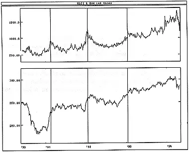

Both of these indicators, Odd Lot Purchases and Odd Lot Sales, display what their names imply: the number of shares (in thousands) purchased or sold in odd lots. An "odd lot" is a stock transaction of less than 100 shares.
(Unfortunately, the trading of 99 share lots in an effort to skirt the "up-tick" rule, which requires that specialists take short positions only when prices move upward, has rendered Odd Lot indicators less reliable.)
The odd lot trade numbers are used in several different ratios and indicators. By themselves, they show the investment activities of the odd lot traders. Being a contrarian indicator, a high number of Odd Lot Purchases is generally considered bearish, whereas a high number of Odd Lot Sales is considered bullish. The idea is to act opposite of the small, uninformed odd lot traders.
However, it has been my experience that, for whatever reason, the odd lotters have tended to be on the right side of the market recently.
The following chart shows the Value Line Composite Index and a 10-day moving average of Odd Lot Sales.
 I drew vertical lines when the odd lotters were selling (as identified by relatively high moving average values). Conventional odd lot interpretation would have you buy at these points. However, in retrospect, it appears that these were appropriate short-term selling points.